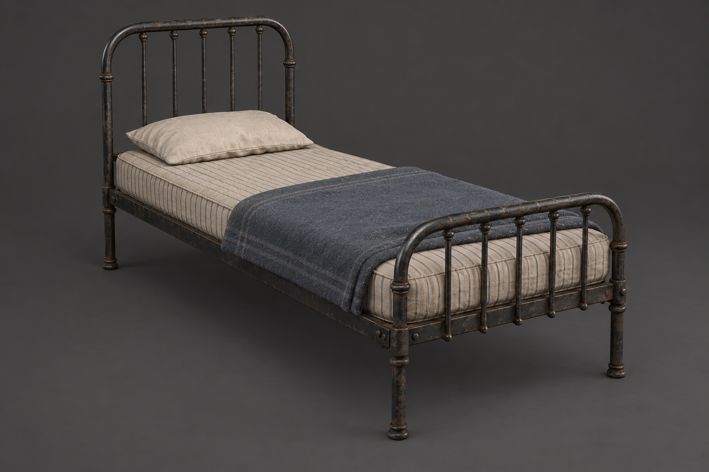
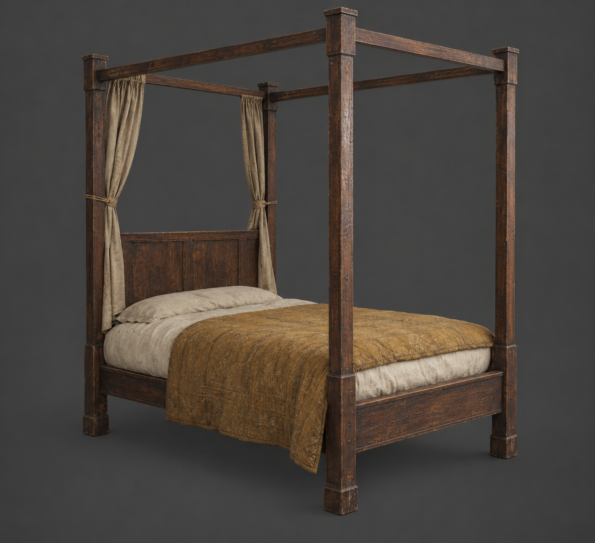
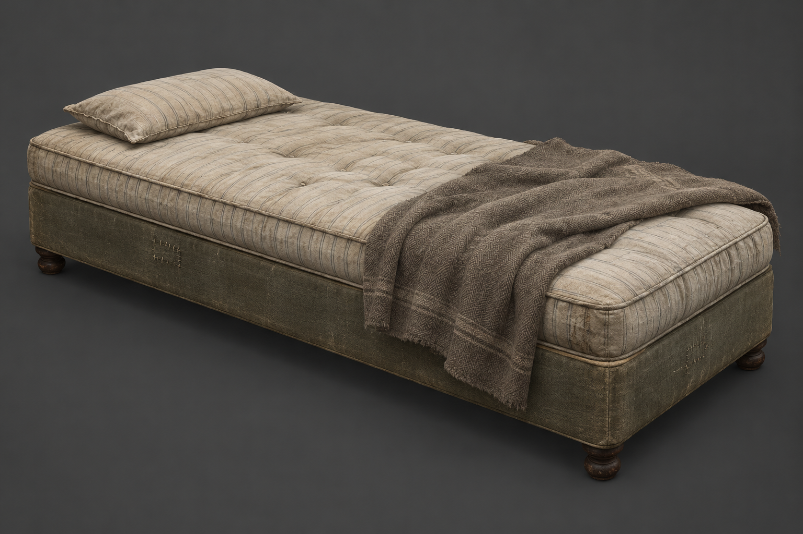
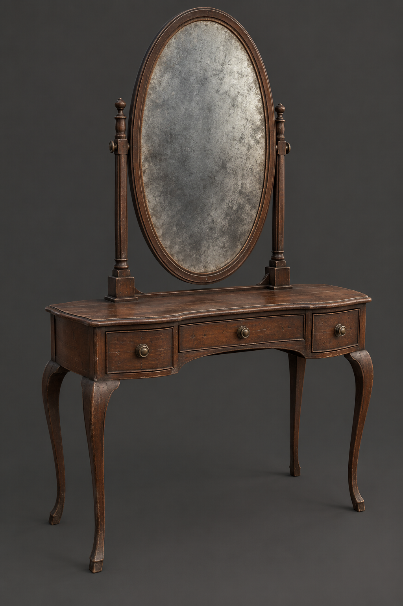

当前运行库只有一种床。先补：金属细栏、高柱布帘、低矮软榻，外加椭圆镜梳妆台。以下尺寸为目标值，需生成后测量；四柱床不能直接塞入当前低床碰撞槽。
空旷与重复的审计、接入要求 · 三种子六层原始统计

约 1.0 × 2.0 × 1.15 m；细栏杆、床下透空

约 1.15 × 2.05 × 2.2 m；高柱与局部布帘

约 0.95 × 1.95 × 0.52 m；无床头、低横向体积

约 1.1 × 0.5 × 1.65 m；镜面竖向焦点